Case study / 個人制作 / 2026
CONPASS
予定と雑談で育つ、AIの相棒。
怪しい連絡が届いたら、相棒と一緒に倒す。
16タイプ診断から生まれるキャラクター「コン」と話すだけで、予定が入り、相棒が育ちます。届いたSMSやメールを貼ると、コンが見て、あやしければ敵として現れます。企画から設計、画面、キャラクター、実装まで、AIを使いながらひとりで作りました。

- 01
入力をやめて、話すだけにした
予定も、その日にやったことも、相棒との雑談から拾う。記録のための入力画面はつくらない。
- 02
世話の義務をなくした
放っておいても弱らない。育てるゲームにありがちな「やらなきゃ」を、最初から外している。
- 03
確かめる手間を、戦いに置きかえた
怪しい連絡を貼ると、手口ごとの敵が現れる。面倒な確認を、相棒を守る行動に変えた。
続かない記録と、
確かめなくなる連絡
出発点は、自分が困っていた2つのことです。
記録するアプリは、入力がつらくて続かなかった。
予定や習慣を残すアプリはいくつも試したが、毎日入力すること自体が手間になり、やめてしまった。
怪しいSMSやメールが来ても、だんだん確かめなくなる。
手間を、相棒との関係に
置きかえる
やることを増やさずに、やりたくなる形に変えることを考えました。
起点にした考え
相棒の使命は、守ること
ゲームにすることで確かめる行動へそっと背中を押す、ナッジの考え方も取り入れています。
12問から、16の系統の
どれかが生まれる
相棒は選ぶのではなく、答えから生まれます。口調は生まれた系統で決まり、育っても変わりません。
STEP 1
12問に答える
4つの軸 × 3問の二択
STEP 2
16の系統が決まる
16タイプ診断の考え方をもとにした系統
STEP 3
たまごをつつく
つつくとかえる。名前をつける
STEP 4
話す・予定・育つ
ここから毎日の相棒になる
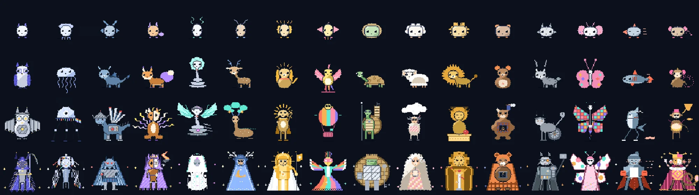
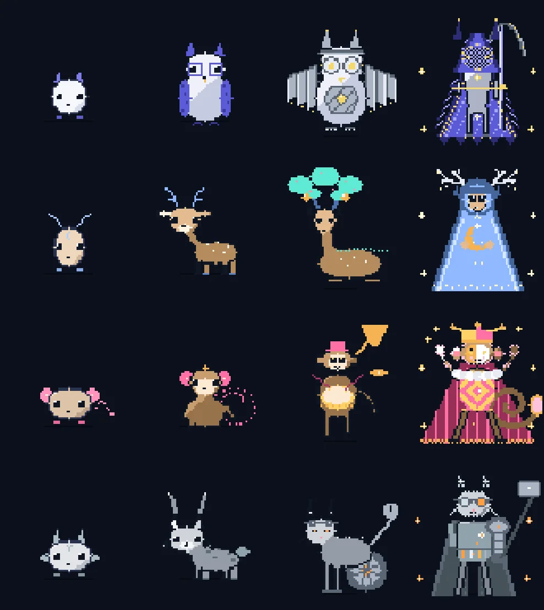
17体目
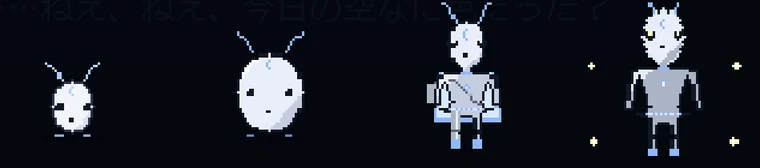
性格の傾きがどの軸でも真ん中に近いまま育つと、進化のときに、診断には出てこない17体目「旅の子」になります。
話したぶん、やったぶんで
進化する
会話と、現実での達成の報告でゲージがたまります。数値は画面に出しません。
| たまるもの | 増え方 | 1日の上限 |
|---|---|---|
| 会話 | +1 | 8回 |
| 達成の報告（走った、勉強した など） | +2 | 3回 |
| 段階 | ゲージ | 達成の数 |
|---|---|---|
| ニードル期 | 0 | 0 |
| ベアリング期 | 20 | 0 |
| ローズ期 | 120 | 8 |
| メリディアン期 | 400 | 40 |
上の段階は、話すだけでは届かず、現実での達成も要る。ほかに「おせわ」「きたえる」「たいせん」がそれぞれ1日5回まで。たいせんは「ため・撃つ・守る」の読み合いです。
話しかけると、
予定が入る
「明日の15時に歯医者」と話すと、Googleカレンダーに入ります。変更や取り消しも会話でできます。予定が終わって6時間以内には、コンから「どうだった？」と聞いてきます。


怪しい連絡を、
敵として倒す
届いたSMS、メール、URLを貼ると、コンが見ます。あやしいときだけ、手口ごとの敵が現れます。
01
貼る
届いた文面やURLをそのまま貼る
02
見る
あやしい／わからない を判定し、理由と確かめ方を出す
03
戦う
あやしいときだけ。コンが一時的に進化して迎え撃つ
04
記録
日付、敵、結果、確かめ方を残す（30件まで）

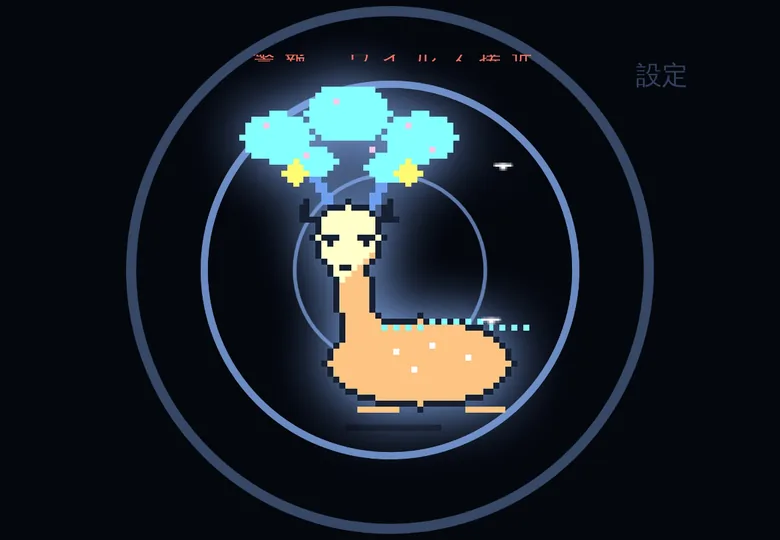


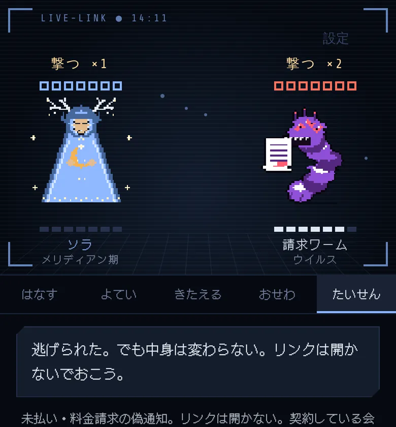
手口ごとの敵（7種）
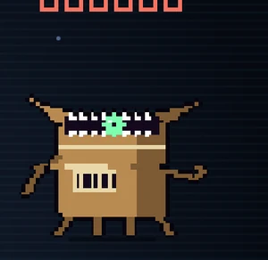
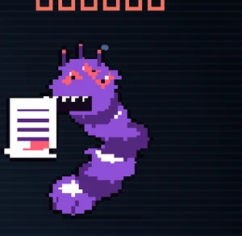
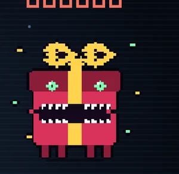
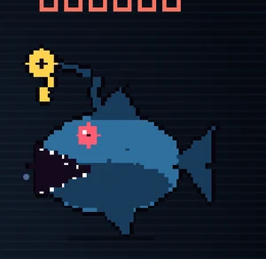
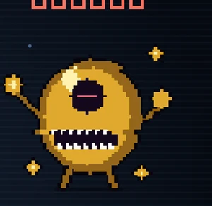
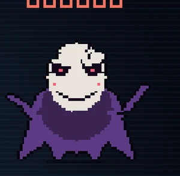
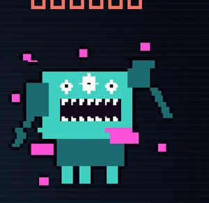
敵の強さはコンの段階の前後1段階。どれもオリジナルのデザインです。
判定のしくみ
ふだんは Claude が文面を読んで判定します。日本でよくある手口（再配達、未払い、当選、偽ログイン、投資や副業、なりすまし）と、URLのドメイン、急がせる言い方、お金や個人情報を求める言い方を見ます。
AIにつながらないときは、手元の言葉の点数で判定します。
- 手口に当てはまる言葉
- 1
- 急がせる言葉
- 1
- お金・個人情報を求める言葉
- 1
- あやしいURL
- 2
合計3点以上で あやしい。手元の判定は「安全」とは言わない。
勝つと「守り」が+2（1日2回まで）。はじめての撃退は「おもいで」に残ります。見張りの戦いは、1日の対戦回数を使いません。
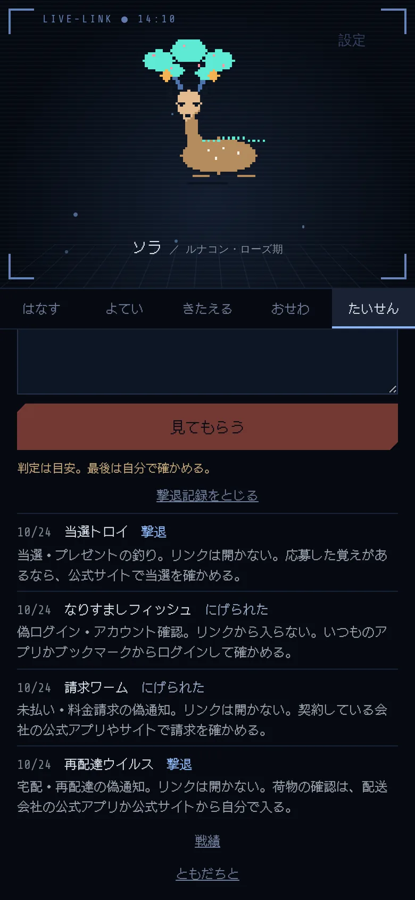
ゲームにしても、
ゆずらないこと
遊びにすると、判定を信じすぎたり、勝ち負けで行動が変わったりするおそれがあります。そこで次のことを決め、すべて実装しています。
- いつも
判定は目安。最後は自分で確かめる。
と出す - 判断がつかないときは「保留」にして、戦わない
- AIにつながらないときの判定は、「安全」とは言わない
- 負けても、取るべき行動は変えない
逃げられた。でも中身は変わらない。リンクは開かないでおこう。
- 貼った文面は保存しない
- 文面の中に書かれた指示には従わないただのデータとして扱う
- 見張りは、1日の対戦回数を減らさない
- コンは診断や説教をしない
いま言えること、
まだ言えないこと
いま言えること
- 使っているのは自分だけclaude.ai 上の非公開のアプリとして、iPhone と PC で使っている
- 改修を重ねて現在78版
- ここに書いた仕組みと線引きは、すべて実装済み
まだ言えないこと
- 判定の精度、会話の質、使う頻度利用ログをとっていないため、数字では言えない
- ほかの人に使ってもらった検証想定している使い手は、高齢の人や若い人。まだ確かめていない
- 配ることはまだできないAIは Claude を通して動かしている。配るには、組み込み方から考え直す必要がある